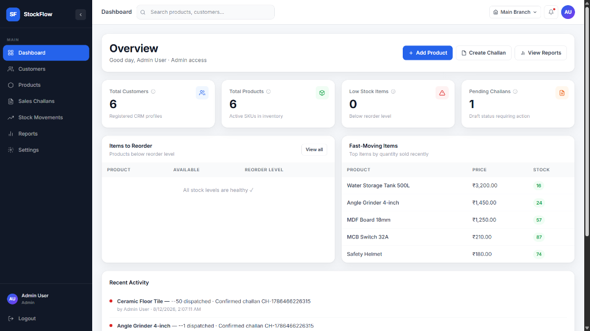
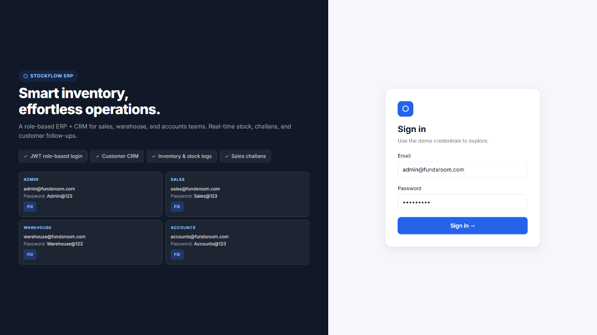
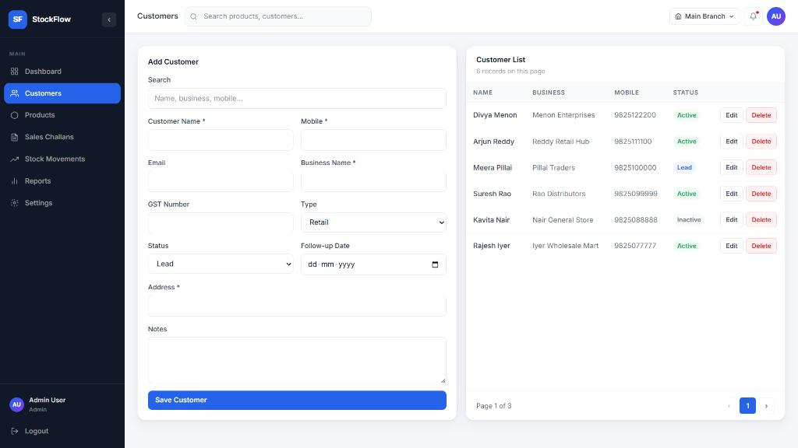
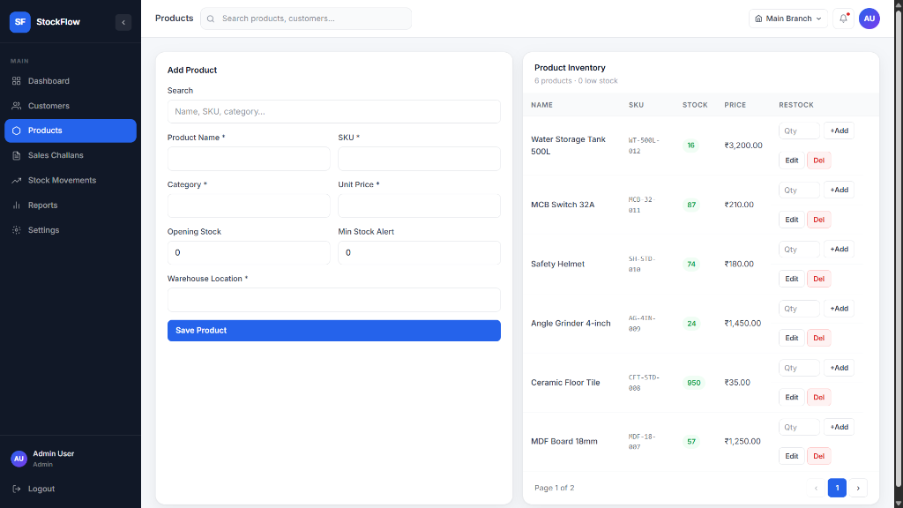
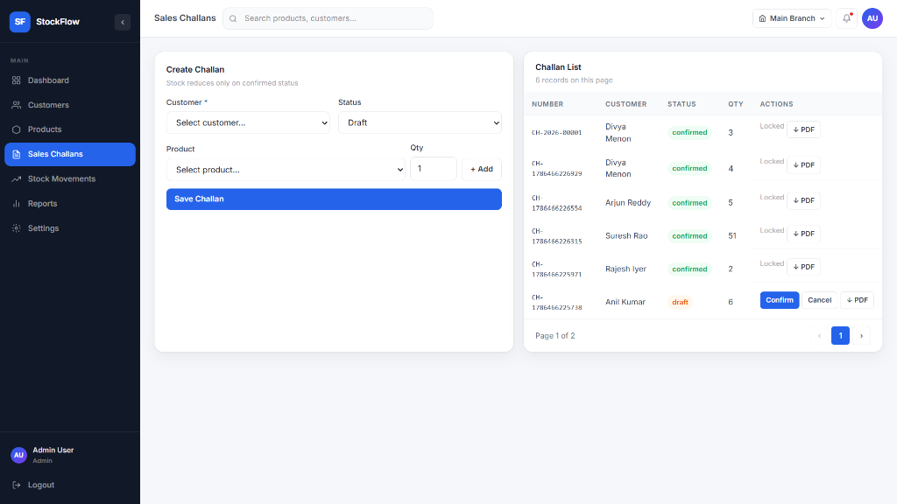

A lightweight full-stack ERP and CRM system for wholesale and distribution businesses — managing customers, products, inventory, sales challans, and follow-up activities across internal teams.

StockFlow ERP — Business summary dashboard with KPIs, recent activity, and low stock alerts.
StockFlow ERP is a comprehensive production-grade solution designed to handle core business operations for a wholesale/distribution enterprise. Built as a full-stack developer case study, it showcases REST API design, complex database modeling, role-based authentication, and real inventory business logic wrapped in a modern SaaS-style UI built with Tailwind CSS v4.
The system manages customers, products, inventory, sales challans, and follow-up activities for internal teams such as Sales, Warehouse, and Accounts — each with role-specific access.
The system implements JWT-based authentication with distinct role access levels. A single requireRole() middleware guards every protected route, ensuring each team sees only what's relevant to them:


Login screen (left) and Customer CRM with follow-up notes and status tracking (right).
The inventory module handles complete product lifecycle management with built-in safeguards:

Inventory page — product list with stock levels, SKUs, and minimum stock alert indicators.
The challan system is the core business workflow of StockFlow ERP, requiring precise implementation of business rules:
CH-YYYY-NNNNN, auto-incremented at the database level to prevent duplicates.JSONB column — preserving historical accuracy even if product details change later.SELECT ... FOR UPDATE) before the quantity check and deduction, eliminating race conditions entirely.

Sales challan creation — multi-product selection, automatic numbering, and state management.
.github/workflows/ci.yml) runs on every push — linting, type-checking, and building both frontend and backend to catch regressions early.VITE_API_URL pointing to the production backend — zero config, instant CDN distribution.npx prisma migrate deploy runs automatically on startup to keep schema in sync.